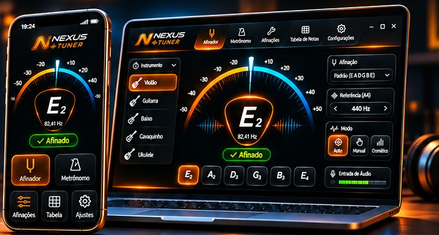
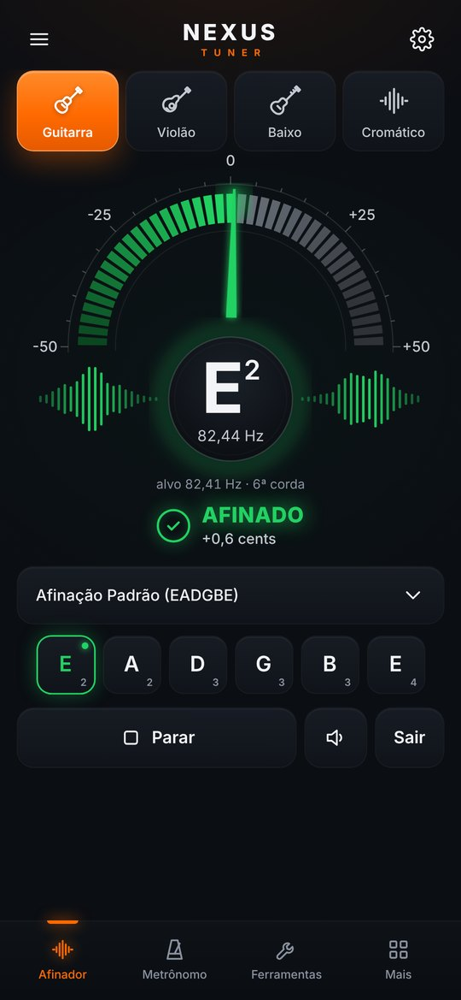
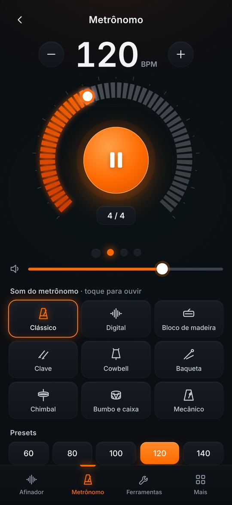
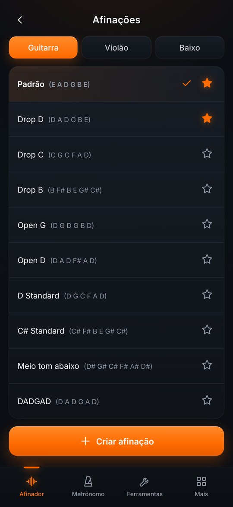
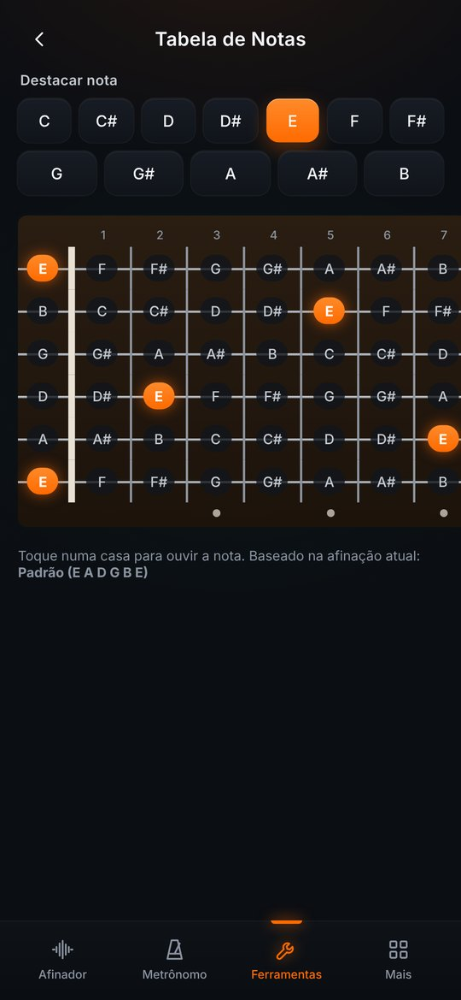
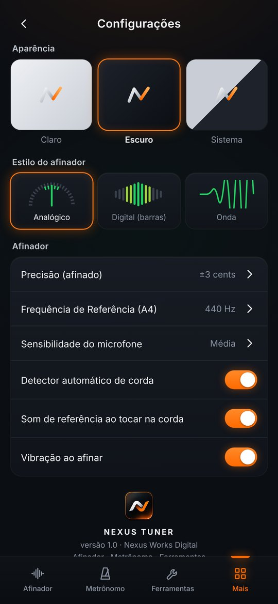

Afine seu instrumento.
Encontre seu som.
Afinador preciso, metrônomo e ferramentas para músicos. Sem anúncios.

Afinador preciso
Afine violão, guitarra, baixo e outros instrumentos com precisão de até ±1 cent e resposta rápida.
Metrônomo com 9 sons
Clássico, madeira, clave, cowbell, chimbal e mais. Compassos, acento e tap tempo.
Afinações alternativas
Drop D, Drop C, Open G, DADGAD, meio tom abaixo e muito mais. Crie e salve as suas.
Tabela de notas
Consulte as notas no braço do instrumento e aprimore seus estudos e acordes.
Tudo o que você precisa para praticar
Um conjunto completo de ferramentas, em um só aplicativo.





Como funciona
Simples, rápido e direto ao ponto.
Escolha o instrumento
Violão, guitarra, baixo ou cromático, e a afinação que quiser.
Permita o microfone
O som é analisado no próprio aparelho e nunca é gravado nem enviado.
Afine até ficar verde
Toque uma corda solta e ajuste a tarraxa até o indicador mostrar que está afinada.
Disponível em várias plataformas
Use direto no navegador ou baixe no seu dispositivo.
No navegador, toque em Adicionar à tela inicial (Chrome: ⋮ › Adicionar à tela inicial · Safari: Compartilhar › Adicionar à Tela de Início). Ele vira um ícone e funciona offline. Se o Android pedir, permita “instalar apps desta fonte” para o APK.